| はじめての駅すぱあとWebサービス 駅データ、経路検索のWebAPI | |
| 丸山 ひかる & 見川 孝太 | |
| GitBook (2018) | |
本書を手にとっていただいているということは「駅すぱあと」 1 をご存知でしょうか？ 少なくとも興味があると考えて良いでしょうか？ もちろん駅すぱあとが何かなんて知らないという方もいらっしゃるでしょう。 そんな方のために、この「はじめに」があります。 すでにご存知の方は次のページをめくっていただいても問題ありません。 「駅すぱあと」とは、1988年に誕生した経路探索ソフトです。 昨今ではスマホアプリで乗り換えを調べる際などに利用されている方もいるのではないでしょうか。 個人向けと思われがちなこの駅すぱあとですが、経路を調べる以外にも様々な機能を備え、多くの企業やアプリケーションで長く使われている歴史があります。 本書は、その駅すぱあとの提供形態の１つであるWebAPIの入門書となります。 利用を検討されたり、興味を持たれたりした際に本書がお役にたてば幸いです。
1 . 「駅すぱあと」とはhttps://ekiworld.net/about/index.html ↩
「駅すぱあとWebサービス」とは、駅すぱあとの提供形態の１つです。これまでSDK 1 やイントラネット 2 などで提供してきた駅すぱあとの機能をWebAPIとして提供しています。 WebAPIとして提供することで、自身の環境でのインストールや環境構築、データの更新やスケールなど従来の様々な付帯作業を気にする必要がなくなります。
様々なサービスがみなさんの価値ある仕事に集中するために用意されているように、駅すぱあとWebサービスも極力「必要だけれども差別化要因にはならないこと」を無くすよう作られています。
また、実際にコードを書くエンジニアの方に使いやすいサービスであるべく、法人向けの有償プランだけではなく個人で無料で使えるプラン 3 を用意したり、APIのドキュメント 4 をWebで一般公開したり、サンプルコード 5 をGithubで公開したりしています。我々の会社のプロダクトのバックエンドとして利用されることも多く、内外での実績に支えられています。 少し技術的な話をすると、各APIはREST(Representational State Transfer)ベースで提供されており、XMLまたはJSONでの結果取得が可能です。HTTPが利用可能な言語であれば特別なライブラリ等を使わずに実装が可能です。
ちなみに機能にはどういったものがあるのでしょうか？ドキュメントを元に列挙してみました。
これは抜粋ですが、さらにこのカテゴリ以下に様々なAPIがありその数は40を超えます。すべての機能を駆使すれば、iOS/Androidで提供されているような乗り換えのためのアプリを作成することだって可能です。次項からは、そのための準備を含めて解説していきます。
1 . 駅すぱあとSDK/ネットワークSDKhttps://ekiworld.net/service/sier/sdk/index.html ↩
2 . 駅すぱあとイントラネットVer.2https://ekiworld.net/service/sier/intranet/index.html ↩
3 . 駅すぱあとWebサービス フリープランhttps://ekiworld.net/service/lp/webservice/ ↩
4 . 駅すぱあとWebサービス 開発者向けドキュメントhttp://docs.ekispert.com/v1/ ↩
5 . HTML5インターフェースサンプルhttps://github.com/EkispertWebService/GUI ↩
それでは、ここからは簡単なWebアプリケーションを例に実際の開発の流れを見て行きましょう。一緒に手を動かしながら読み進めていただくと、より理解が深まります。
入力された文字列から駅を確定し、経路探索を行い結果を表示する簡単なWebアプリケーションを作ります。
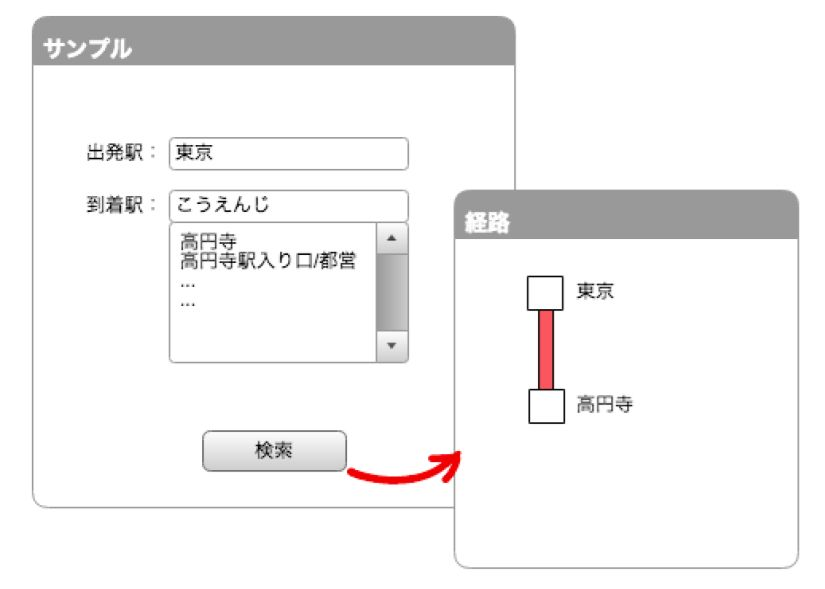
実装するアプリケーション画面イメージ
駅すぱあとWebサービスには、無料で使える「フリープラン」 1 と、全ての機能が使える「スタンダードプラン」 2 の2つのプランがあります。 今回はフリープランで使える機能を用いてアプリケーションを作成します。
駅すぱあとWebサービスをご利用いただくにはアクセスキー 3 が必要ですが、本書をお読みいただいている皆さまがその場で試していただけるようにアクセスキーを用意しました。
書籍限定 お試し用アクセスキー：LE_EeMdKVHwJQSen
※ フリープランの機能をお試しいただけるアクセスキーです。
では早速実装にうつります。
index.html
など、適当なファイルを作成し、HTMLをリスト1のように入力します。
Webアプリケーションをサクッと動かすのに便利なツール「JS Bin」 4 、「JSFiddle」 5 などをご利用いただくのも手です。
▼リスト1 HTMLソースコード
<!DOCTYPE html>
<html
>
<head
>
<meta
charset
="utf-8"
>
<meta
name
="viewport"
content
="width=device-width"
>
<title
>
駅すぱあとWebサービス 経路探索サンプルアプリ</title
>
<script
src
="https://cdn.rawgit.com/EkispertWebService/GUI/84587/expGuiStation/expGuiStation.js"
>
</script
>
<script
src
="https://cdn.rawgit.com/EkispertWebService/GUI/84587/expGuiCourseLight/expGuiCourseLight.js"
>
</script
>
<link
rel
="stylesheet"
href
="https://cdn.rawgit.com/EkispertWebService/GUI/84587/expGuiStation/expCss/expGuiStation.css"
/>
</head
>
<script
>
var
accessKey ="LE_EeMdKVHwJQSen"
;// お試し用のアクセスキー
var
depStationApp;
var
arrStationApp;
var
courseLight;
function
init
()
{
depStationApp =new
expGuiStation(document
.getElementById("depStation"
));
depStationApp.setConfigure("key"
, accessKey);
depStationApp.setConfigure("ssl"
,true
);
depStationApp.dispStation();
arrStationApp =new
expGuiStation(document
.getElementById("arrStation"
));
arrStationApp.setConfigure("key"
, accessKey);
arrStationApp.setConfigure("ssl"
,true
);
arrStationApp.dispStation();
courseLight =new
expGuiCourseLight();
courseLight.setConfigure("key"
, accessKey);
courseLight.setConfigure("ssl"
,true
);
}
// 探索ボタンの動作
window
.onload =
function
()
{
var
search =document
.getElementById('search'
);
search.addEventListener('click'
, (e) => {
// 候補を閉じる
depStationApp.closeStationList();
arrStationApp.closeStationList();
var
searchObj = courseLight.createSearchInterface();
// 出発着の設定
searchObj.setFrom(depStationApp.getStationCode());
searchObj.setTo(arrStationApp.getStationCode());
// 探索を実行
courseLight.search(searchObj,
function
(isSuccess
)
{
if
(!isSuccess) {
alert("探索結果が取得できませんでした"
);
}else
{
document
.getElementById("ekispertUrl"
).textContent ="駅すぱあと for web の探索結果を表示する"
;
document
.getElementById("ekispertUrl"
).href = courseLight.getResourceURI();
}
});
})
};
window
.addEventListener('load'
, init);
</script
>
<body
>
<div
>
出発地
<div
id
="depStation"
>
</div
>
</div
>
<div
>
目的地
<div
id
="arrStation"
>
</div
>
</div
>
<button
id
="search"
>
探索</button
>
<a
id
="ekispertUrl"
href
=""
target
="_blank"
>
</a
>
</body
>
</html
>
コードの中身を見ると、<script src="https://cdn.rawgit.com/EkispertWebService/GUI/84587/expGuiStation/expGuiStation.js"></script>
など、いくつかの外部ファイルをインクルードしていますが、これは「HTML5インターフェースサンプル」
6
です。 HTML5インターフェースサンプルとは、HTMLとJavaScript、CSSで実装された画面をサンプルとして提供しているものです。
ファイルに入力し終えたら、ファイルをブラウザで開いてください。 駅が検索でき、経路探索結果のURLが表示されるアプリケーションができました。
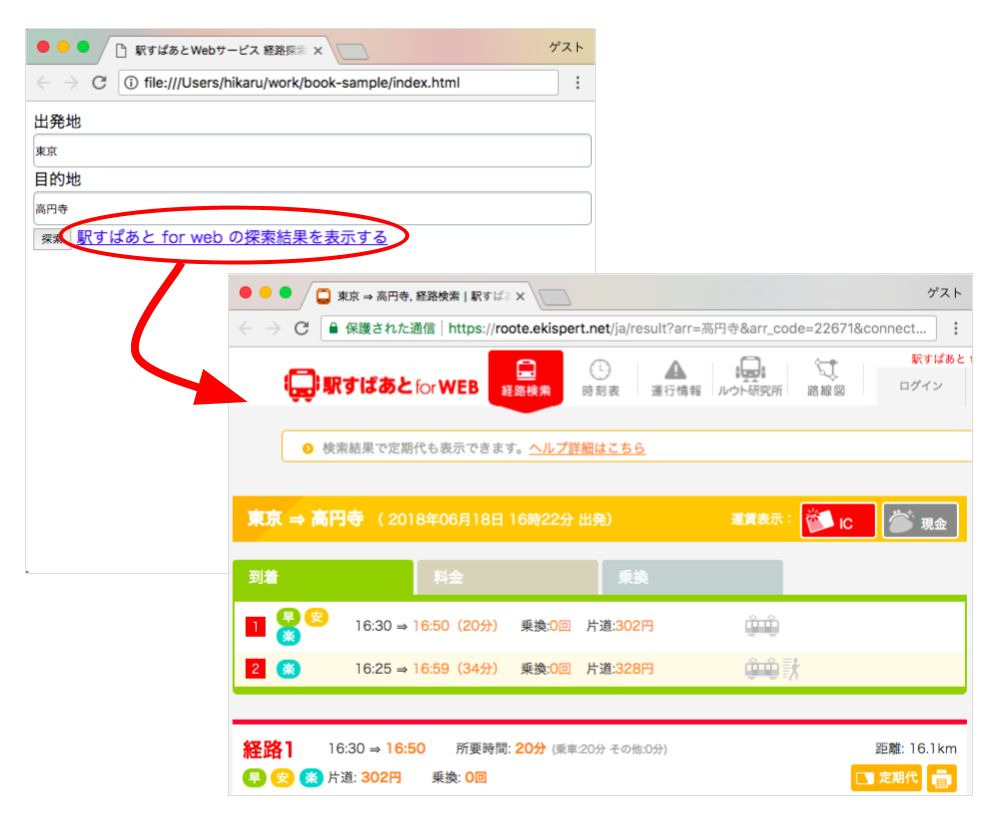
アプリケーション実行結果
アプリケーションが意図した挙動にならなかったら、ブラウザが提供する「開発者ツール」を使ってデバッグしましょう。 「開発者ツール」と聞いてピンとこない方は、本書付録の「開発者ツールを使いこなす 」をご参考にしてください。
1 . 駅すぱあとWebサービス フリープランhttps://ekiworld.net/service/lp/webservice/ ↩
2 . 駅すぱあとWebサービス スタンダードプランhttps://ekiworld.net/service/sier/webservice/index.html
※ スタンダードプランは法人のお客様のみご利用いただけます。↩
3 . Webから申し込みいただくことで、アクセスキーを取得できます。
フリープラン:https://ekiworld.net/free_provision/index.php
スタンダードプラン:https://ekiworld.net/trial/index.php?case=6 ↩
4 . JS Binhttps://jsbin.com/ ↩
5 . JSFiddlehttps://jsfiddle.net/ ↩
6 . HTML5インターフェースサンプルhttps://github.com/EkispertWebService/GUI ↩
ここまでで、駅すぱあとWebサービスを使ったアプリケーションを実装しました。 では、アプリケーション内ではどんな内容のリクエストを送信し、APIからどのようなデータが返却されているのでしょうか？ こちらの項目では、駅簡易情報API(/station/light) 1 を例に詳しく解説します。
1 . 駅簡易情報APIhttp://docs.ekispert.com/v1/le/api/station/light.html ↩
次のURLをブラウザでアクセスしてみてください。
https://api.ekispert.jp/v1/xml/station/light?name=渋谷&type=train&key=LE_EeMdKVHwJQSen
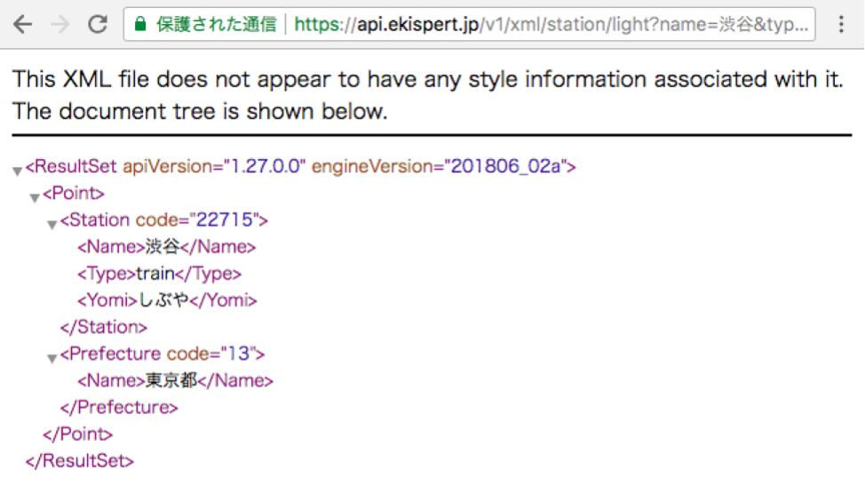
ブラウザでURLを開いた時の画面（XML）
リスト3のようなレスポンスが表示された場合は、アクセスキーが間違っている可能性があります。今一度、アクセスキーをお確かめください。
▼リスト3 403エラーのレスポンス例
<?
xml version="1.0"
encoding="UTF-8"
?>
<ResultSet
apiVersion
="1.27.0.0"
engineVersion
=""
>
<Error
code
="W403"
>
<Message
>
認証エラー</Message
>
</Error
>
</ResultSet
>
何気なくアクセスしたURLは、APIのバージョン、レスポンスのデータフォーマット、APIの機能、そして、クエリパラメータで構成されています。
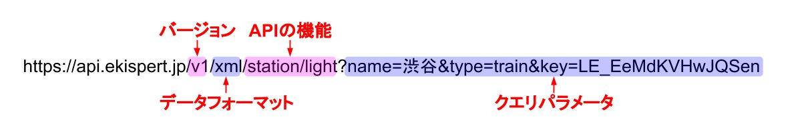
APIのリクエストURL構成
駅すぱあとWebサービスのレスポンスはXMLまたはJSONで取得可能です。 データフォーマット部分を「xml」と指定すればXMLが、「json」と指定すればJSONのフォーマットでデータが返ってきます。
駅簡易情報API(/station/light)は、「アプリケーションを作ってみよう 」で作成したアプリケーションの駅入力フォームの裏側で利用されている機能です。以下のURLにアクセスします。
https://api.ekispert.jp/v1/json/station/light?name=渋谷&type=train&key=LE_EeMdKVHwJQSen
ブラウザでJSONのレスポンスデータを見たときに、改行が無く見づらいと感じたら、ブラウザが提供する「ブラウザ拡張機能」を利用してみてください。 本書付録の「オススメのブラウザ拡張機能 」をご参考にしてください。
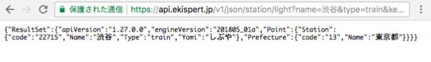
ブラウザでURLを開いた時の画面（JSON、ブラウザ拡張機能無し）
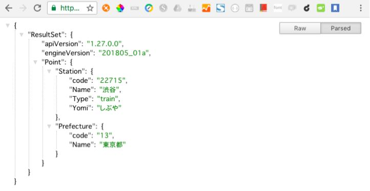
ブラウザでURLを開いた時の画面（JSON、ブラウザ拡張機能有り）
| パラメータ | 説明 |
|---|---|
| name | 候補文字列から駅検索を行うためのパラメータです。 |
| type | 駅の交通種別を指定するパラメータです。 |
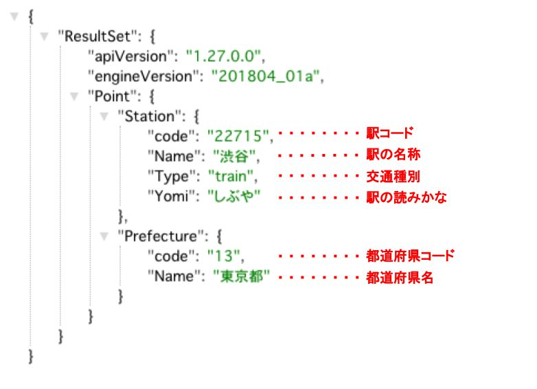
レスポンスデータの解説
駅すぱあとが持つ駅には、「駅コード」 1 と呼ばれるユニークな値が振られています。駅コードは、駅名変更などに関わらず基本的に不変ですので、保存を前提とした利用は駅コードの利用が推奨されます。「都道府県コード」 2 とは、駅すぱあとWebサービスで定める都道府県に紐づいたコードです。
1 . 駅コードhttp://docs.ekispert.com/v1/le/dictionary/station-code/ ↩
2 . 都道府県コードhttp://docs.ekispert.com/v1/le/dictionary/prefecture-code/ ↩
ここまで、サンプルコードを利用した簡単なアプリケーション作成と基本的なAPIの解説を紹介しましたがいかがでしょうか？ 「駅すぱあとWebサービスとは？ 」でも書きましたが、本サービスには他にも多くの機能 1 があります。ですが、基本的な使い方、サンプルコードの再利用の方法はここまでに解説した通りです。みなさんが本サービスを気に入ってくださり、新たなアイデアや効率化などを発想していただけたら著者としてはこれに勝る喜びはありません。
1 . API一覧http://docs.ekispert.com/v1/api/#api%E4%B8%80%E8%A6%A7 ↩
本書は駅すぱあとWebサービスの入門書として、流れを追いながら学習できるように書きました。 まずは余計なことを考えずに触ってもらいたいという思いもあり、注意点等は最低限に抑えました。 ここで改めて開発時に特に注意すべき点や開発に役立つ情報を「付録」という形で用意しました。
JSONを使われる方は流して読む程度で構いませんが、XMLを使おうと考えている方は注意して読んで頂ければと思います。 駅すぱあとWebサービスでは後方互換性を保って機能追加が行われていますが、互換性維持のために幾つかのポイントを意識する必要があります。
特に重要なのが、要素の取得についてです。 要素は表す内容に対してユニークですが、階層や全体のデータの中でユニークなわけではありません。 例えばStation要素は駅を表しますが、全体のデータ構造に対して、あらたに駅を表現する必要があれば、今までなかった階層や親要素の子要素として出現する可能性があります。 つまり、現時点でのデータ構造のみを前提とした相対パスでの実装は大きな危険を伴います。 同じStationでも親子関係における文脈の意味が強くでるため、必ず絶対パスで取得するようにしてください。 XMLを利用する際には、XMLパーサを利用することが多いかと思いますが、DOMでパースしてXPATHを利用する際には手軽に相対パスで取得できてしまうため、注意が必要です。
フリープランをご利用いただく場合は読み飛ばしていただいて構いません。
スタンダードプランでは、多くのAPIが用意されていますが、その中にも課金対象となるものとそうでないものがあります。 意図せず無駄な課金が発生してしまい、想定していたよりも費用が掛かってしまうのは望むところではありません。 特に良くあるのが、「アプリケーションを作ってみよう 」の項にもある駅の入力補助をインクリメンタルサーチで実装するケースです。 実装には駅情報API(/station)を用いるように見えますが、駅情報API(/station)は課金対象です。 コール数が多くなるインクリメンタルサーチに利用するのは現実的ではありません。 そのために課金対象外のAPIとして駅簡易情報API(/station/light)を用意しています。 駅簡易情報API(/station/light)は駅情報API(/station)のサブセットのような扱いになっており、駅の座標等を持っていないので課金対象外となっています。 インクリメンタルサーチの結果に必要なのは名称やコードなのでこのような実装には駅簡易情報API(/station/light)で十分です。 駅簡易情報API(/station/light)以外にも経路を検索するまでに必要な操作は基本的に課金対象外として用意してありますので、結果を得る過程で不要な課金を避けることができます。
いかがでしょうか？他にも注意点はありますが、全てドキュメント 1 に記載されていますので開発を始める際にはご一読ください。
1 . 利用上の注意http://docs.ekispert.com/v1/get-started/attention/ ↩
駅すぱあとWebサービスを使って開発をする上で、実際に著者が活用しているツールをご紹介します。
駅すぱあとWebサービスのドキュメントサイトでは、APIを試すのにぴったりなツール「API Chercker」 1 を用意しています。これは、APIの仕様を調べるだけではなく、APIをインタラクティブに呼び出し挙動を試すことができるため、APIの理解を深めることができます。
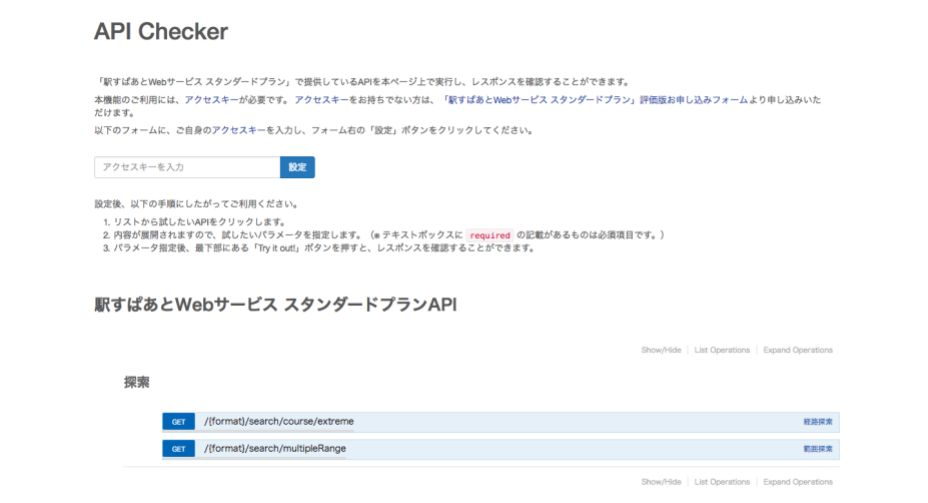
ドキュメントサイトで用意しているAPI Checkerの画面
1 . API Checker
スタンダードプラン:http://docs.ekispert.com/v1/tools/api-checker/
フリープラン:http://docs.ekispert.com/v1/le/tools/api-checker/ ↩
「ブラウザ拡張機能」とは、ブラウザの機能を拡張するためのプログラムです。 「プラグイン」とも呼ばれることがありますが、本書では「ブラウザ拡張機能」と表記します。
ブラウザ拡張機能のインストール方法や管理方法は割愛し、WebAPIを使って開発する上で便利なGoogle Chromeのブラウザ拡張機能を紹介します。 ここでは、Google Chromeのブラウザ拡張機能を紹介しますが、他のブラウザでも類似するブラウザ拡張機能を提供していると思いますので、探してみてください。
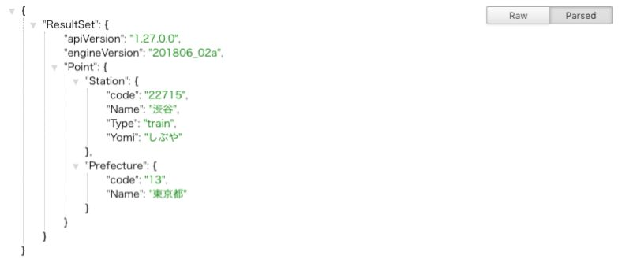
JSONデータがブラウザで見やすくなるブラウザ拡張機能です。WebAPIのレスポンスをブラウザで確認する時に活用します。
https://chrome.google.com/webstore/detail/json-formatter/bcjindcccaagfpapjjmafapmmgkkhgoa
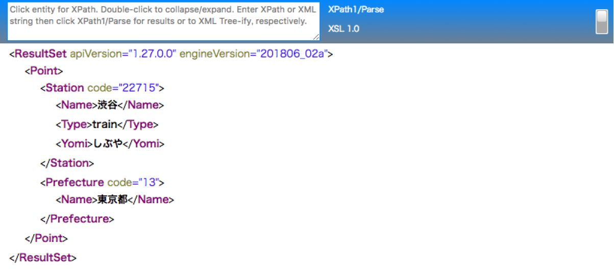
XMLデータがブラウザで見やすくなるブラウザ拡張機能です。さらに、XPathでXMLデータからデータを抽出することもできます。
https://chrome.google.com/webstore/detail/xml-tree/gbammbheopgpmaagmckhpjbfgdfkpadb
ページ全体をスクリーンショット出来るブラウザ拡張機能です。 実装するアプリケーションのレビューなどで活用できます。
https://chrome.google.com/webstore/detail/take-webpage-screenshots/mcbpblocgmgfnpjjppndjkmgjaogfceg
今回実装したアプリケーションのように、JavaScriptを使ってブラウザ上で動くアプリケーションを作るなら、「開発者ツール」を使いこなしましょう。開発速度がグッとあがるはずです。 開発者ツールとは、ブラウザに搭載されているデバッグツールです。「デベロッパーツール」とも呼ばれることがありますが、本書では「開発者ツール」と表記します。 現在だとほぼ全てのブラウザで標準搭載されており、Windowsの場合は「F12」、Macの場合は「Option + Command + i」で起動できます。
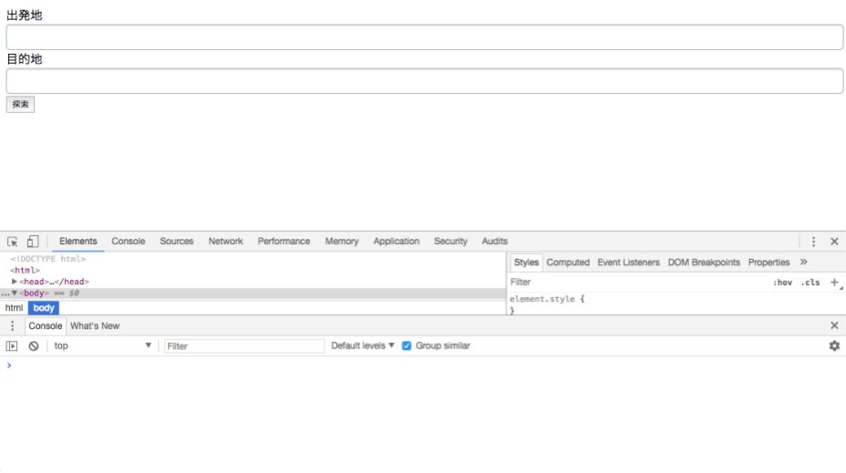
ブラウザ上で開発者ツールを立ち上げた状態（Google Chrome）
ここからは、Google Chromeを例に説明します。
開発者ツールの「Console」パネルは、JavaScriptのデバッグに役立ちます。 アプリケーションが意図しない挙動をしている時は、まずConsoleパネルでエラーが発生していないか確認しましょう。
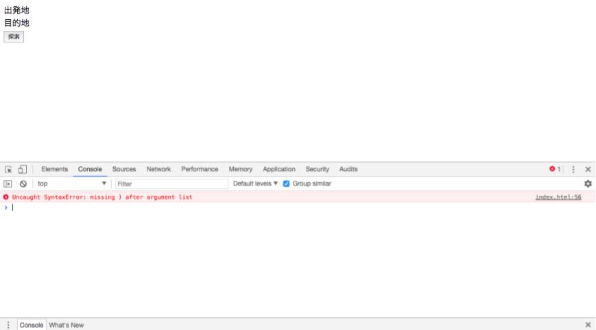
開発者ツールのConsoleパネル（Javascriptコード内でシンタックスエラーが発生している場面）
「Network」パネルは、表示しているページで行うHTTP通信が一覧として現れ、リクエスト、レスポンスの内容やアクセスの状況を見ることができます。つまり、駅すぱあとWebサービスへのアクセスに成功しているか、どんなやりとりがされているか確認できます。
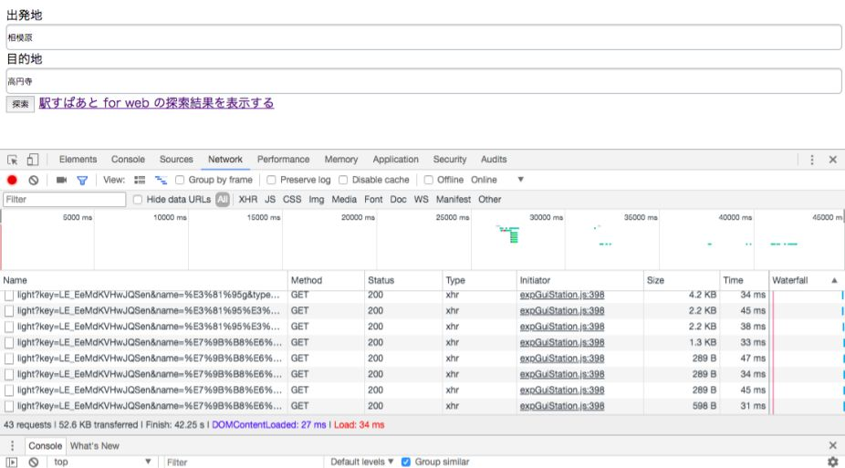
開発者ツールのNetworkパネル
詳細な使い方に関してもっと知りたくなったかと思いますが、インターネット上にたくさんの情報が公開されているので、ここでは割愛します。 興味を持って探求することはエンジニアとしてのスキルアップに繋がるはずです。ぜひ調べてみてください。
駅すぱあとWebサービスの情報はこちらにまとまっています。
https://ekiworld.net/service/sier/webservice/index.html
APIの仕様や開発に役立つ多くの情報を載せています。
http://docs.ekispert.com/v1/
HTMLとJavaScript、CSSで実装された画面をサンプルとして提供しているものです。
https://github.com/EkispertWebService/GUI
駅すぱあとWebサービスに関しての最新の情報を配信しています。
https://www.facebook.com/EkispertWebService/
駅すぱあとWebサービスの稼働状況をご覧いただけます。
http://status.api.ekispert.jp/
本書の出版を記念して、スタンダードプランの初期費用が10%OFFとなるクーポンコードを期間限定で発行いたします。 駅すぱあとWebサービスがお得に始められるのは、2018年12月末までです。 この機会にぜひご利用ください。
クーポンコード：EBOOKEKIWEB
ご契約時に、弊社営業担当に上記クーポンコードをお伝えください。 スタンダードプランの初期費用から10%割引させていただきます。
ヴァル研究所から直接お見積書及びお申込書をご提示する場合にのみ適用いたします。
本キャンペーンは2018年12月末まで有効です。
株式会社ヴァル研究所
2014年に株式会社ヴァル研究所にエンジニアとして新卒入社。 入社して間もなく経路検索WebAPI「駅すぱあとWebサービス」の開発部署へ配属。 新機能の開発や保守、基盤の改修などに携わる。 開発だけではなくお客様とのやりとりや、ドキュメントの改善活動を通してデベロッパーリレーションに興味をもち、テクニカルエバンジェリストとなる。 現在はエンジニアと、自社サービスをつなぐべく積極的に活動中。
株式会社ヴァル研究所
2000年に株式会社ヴァル研究所入社。 イントラネット版やモバイル携帯公式などのプロジェクトを経て、経路検索WebAPI「駅すぱあとWebサービス」の立ち上げに中心メンバーとして関わる。 現在は「駅すぱあとWebサービス」の開発部 部長。 オンプレの苦い経験からAWSに魅せられ、AWSの社内普及活動を行う。 2013年には世界最大のAWSユーザグループ・JAWS-UGの中央線支部を立ち上げから運営を担当。 「AWS Summit」などにも登壇する。